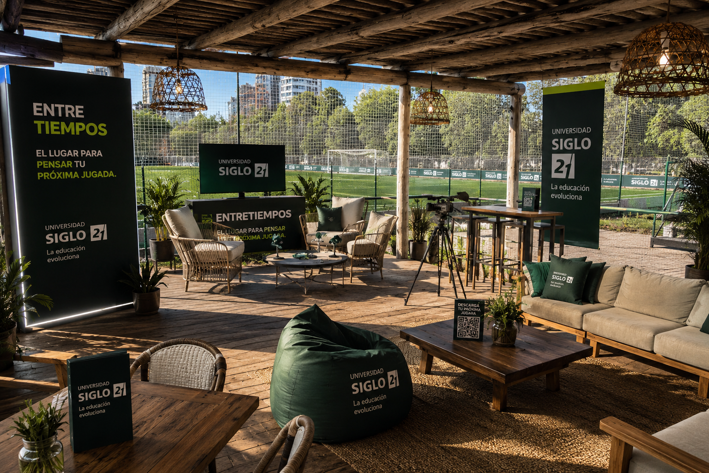
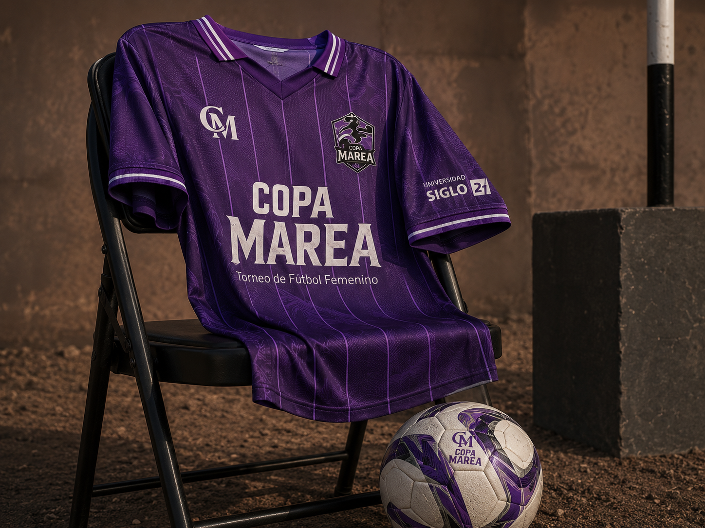
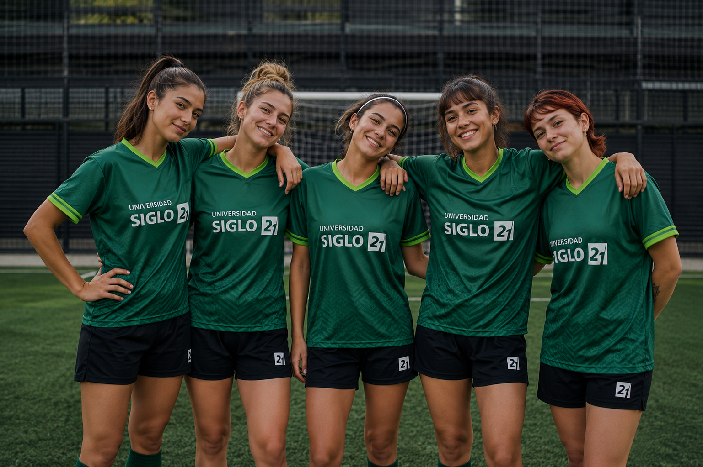
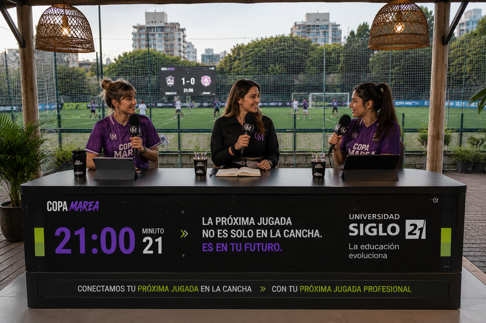

Contenido de Camilita
Camilita abre la conversación
Camilita presenta la campaña y abre la conversación sobre orientación, estudio y futuro.

Copa Marea is the new wave of women's football: a platform for culture, community and content. Where brands don't sponsor, they're part of the scene.
Women's sport is at its highest growth point ever: massive audiences, rising brand investment and a young community that rewards those who join early. And 2026 is a World Cup year: football is back at the center of culture.
Sources: Deloitte (2025) · McKinsey (2024) · FIFA (2023) · Wasserman · The Collective (2024).
Women's sport is growing at record pace, drawing massive audiences and a brand loyalty that men's sport no longer offers with the same strength.
The first 48-team World Cup puts football center stage. And the road continues: the 2027 Women's World Cup is in Brazil, the first time in South America.
There's no format that combines women's football with social content. That white space is the opportunity: getting there before everyone.
Among women who are sports fans:
Projected commercial investment in women's sport for 2025 tops US$2.35B.
Source: Wasserman · The Collective, "The New Economy of Sports" (2024), 35,000+ respondents. Projected investment: Deloitte (2025).
A women's football tournament with teams led by influencer captains, where each captain builds her team and competes for weeks. It's not an event you cover: it's a platform that generates content all the time.

Real teams, real matches, a cup on the line. The sporting thrill is the engine for everything else.
Each captain brings her community. The tournament is told before, during and after, in Gen Z's code.
Brands don't show up stuck on the side: they live inside the flow of the event and the content, naturally.
To Martina and her world. 23, an advanced student or recent grad, Buenos Aires. She plays football with her friends and lives on social media consuming sports lifestyle. She wants to be a protagonist, not just a spectator.

Plays amateur tournaments with her friends. Spends time on social media consuming vlogs and sports lifestyle content.
Finding sports spaces with a real quality experience. She feels women's tournaments are often left in the background.
She's drawn to brands that "do" rather than just "say": that genuinely support women and offer her experiences.
Real communities, with their own captains and followers. Each team comes in with its audience already built.


The undisputed reference of digital women's sportainment joins as official host of Copa Marea. Leader of CF Team and content creator, she brings a genuine connection with the Gen Z football community, with experience hosting events like the Coscu Army Awards and Parense de Manos.
Her channel will host the final's broadcast, integrating into the multiplatform ecosystem to guarantee massive reach.
Continuous competition across weekends, with a journey designed to build tension, story and content at every stage.
Registration and team building by the captains.
Group stage: 3 matches per team, top 2 advance.
Semifinals in a single matchday with the qualifiers.
Grand final streamed live.
Competition and prize in one weekend. The tournament's climax turned into a complete experience.
The climax broadcast with host, commentators and multicamera HD production.
Trophy and symbolic key to the 0km car for the champion team, with the automotive brand present.
A brand-new 0km car for the champion team raises the competitive level and positions the tournament as aspirational. The automotive brand integrates throughout the tournament, activations, challenges and pitch-side presence, with content around the prize before, during and after.


A ground worthy of the tournament, built for competition and content. Everything in one place.
First, what we guarantee: a high volume of vertical content on our own channels. Then the upside: the creator protagonists amplify and add recognizable faces. The base doesn't depend on virality, that's the extra.
* Estimated projection based on the final creator lineup and the organic performance of the accounts. ** Potential reachable audience, not guaranteed reach: the sum of the protagonists' followers as a theoretical ceiling.
Naming, experiential activations, sampling, photo ops and native content. The brand lives inside the event's culture, not as a logo stuck on the side.
Three participation levels, designed for different goals and budgets. Each one defines your presence on the pitch, in the content and in the broadcast.
Each level includes everything from the previous one, plus its own. Choose based on your goal and budget.
Your brand present and visible at the tournament, with base content for social.
Standout presence on pitch and screen, plus physical activation at the venue.
Maximum presence and category exclusivity: the brand that owns the scene.
Indicative prices per brand · category exclusivity · each participation is tailor-made. The detail, activation by activation, is below.
How it looks · everything your brand can activateFour territories, with real examples of how your brand looks in each. The label shows from which level each activation is included; your level adds everything from the previous ones.


Native content formats designed so every type of brand finds its place within the tournament's story.
We mic up a player during warm-up or the post-match: humor, intimacy and the team's vibe.
Ideal: drinks · lifestyle1-minute documentary capsules with the players' stories. Humanizes and builds empathy.
Ideal: purpose-driven brandsLifestyle reels: how players arrive at the ground, sporty and urban looks. Fashion + sport.
Ideal: apparel · accessoriesSlow-motion reels focused on the details: the sweat, the intensity, the hugs, the impact on the turf.
Ideal: sportswear · cars
Copa Marea is the way to enter women's football in the World Cup year, before everyone. Let's design together how your brand takes part.
Una propuesta de contenido, presencia y captación para conectar a Universidad Siglo 21 con una comunidad joven-adulta vinculada al deporte y la cultura digital.
Copa Marea es un torneo de fútbol femenino con 8 equipos, 4 jornadas, cobertura social y una final con streaming. Para Universidad Siglo 21, el valor está en entrar a una conversación activa con una audiencia que estudia, trabaja, consume contenido y busca opciones flexibles para avanzar.
Camilita Fernández participa como host de Copa Marea y como punto de contacto principal para presentar la propuesta de Siglo 21 en redes. Los demás equipos y jugadoras son parte fundamental del torneo, aportando visibilidad y alcance.
Los equipos participan como protagonistas del torneo. Los contenidos comprometidos específicamente dentro de esta propuesta son los indicados en los paquetes y la integración con Camilita.
Copa Marea le habla a una comunidad joven-adulta, digital y en un momento de definición o crecimiento profesional. Personas que estudian, trabajan, consumen deporte y necesitan opciones flexibles para avanzar.
Necesita una modalidad compatible con trabajo, vida social, deporte y proyectos personales.
La pregunta no es solo qué estudiar, sino qué camino puede acompañar su próxima etapa.
El Pase Clave conecta esa búsqueda con carreras online, asesoramiento y derivación al CAU San Isidro.
Un test vocacional digital dentro de una landing de campaña. La experiencia permite explorar intereses, recibir una primera orientación y dejar datos para ser contactada por Universidad Siglo 21.
Preguntas brevesIntereses profesionales, disponibilidad, modalidad de estudio, ubicación e intención.
Resultado orientativoÁreas y carreras sugeridas para seguir explorando dentro de la oferta online.
FormularioDatos de contacto y autorización para recibir asesoramiento.
DerivaciónLead segmentado para continuar la conversación desde el CAU San Isidro.
¿Qué te gustaría cambiar en tu vida profesional?
Quiero encontrar un nuevo rumbo.
¿Preferís crear, liderar, analizar o acompañar?
¿Buscás una carrera online?
La campaña ordena los puntos de contacto para pasar de visibilidad a interacción: contenido en redes, presencia física, streaming y derivación hacia El Pase Clave.
Camilita presenta la campaña y abre la conversación sobre orientación, estudio y futuro.

Un set de contenido y entrevistas dentro del torneo.

Presencia visible en fotos, partidos y entrevistas.

La marca participa dentro de la experiencia deportiva.

Cuando la final llega al minuto 21, la transmisión abre una pausa editorial breve: la marca se integra al relato del partido con una mención natural, placa en pantalla y CTA hacia El Pase Clave.
Una pieza posterior para sostener la conversación y redirigir al test.
Dos niveles de participación para decidir si la marca busca principalmente presencia o si además quiere activar una experiencia de captación digital.
Incluye todo lo del Paquete Base, más:
Valores sujetos a confirmación final de alcance e impuestos correspondientes.
Una propuesta para transformar presencia deportiva y contenido en una puerta de entrada hacia las carreras online de Universidad Siglo 21.
JUGUEMOS